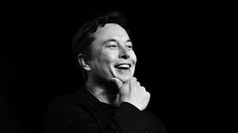

A Tribute To The G.O.A.T.
Elon-Musk
Founder, CEO and chief engineer of SpaceX

Timeline of Elon Musk
1995
-
Musk
and his brother
Kimbal
started
Zip2
.
1999
-
Musk
co-founded
X.com
.
2001
- Concieved
Mars Oasis
, a project to land a miniature experimental
greenhouse
on Mars.
2002
- El, founded
SpaceX
2003
-
Tesla, Inc.
was in corporated, and Musk led the Series A round of investment in Feb 2004, joining its BOD.
2006
-
SpaceX
was awarded a contract from NASA.
2008
- SpaceX was Funded
$1.6 Billion
by NASA.
2015
-
SpaceX
successfully landed the first stage of its Falcon Rocket back at
launch pad
.
2018
- Musk and
Musk Foundation
donated over $480,000 to help solve the
Flint Water Crisis
.
2020
-SpaceX successfully launches 2 astronauts into space on the Crew Dragon in order to dock with the ISS.
2022
-Bought Twitter for 44 billion dollars at the end of April
Know More about Elon Musk
Here
If you get up in the morning and think the future is going to be better. Its a bright day. Otherwise Its not
-Elon Musk